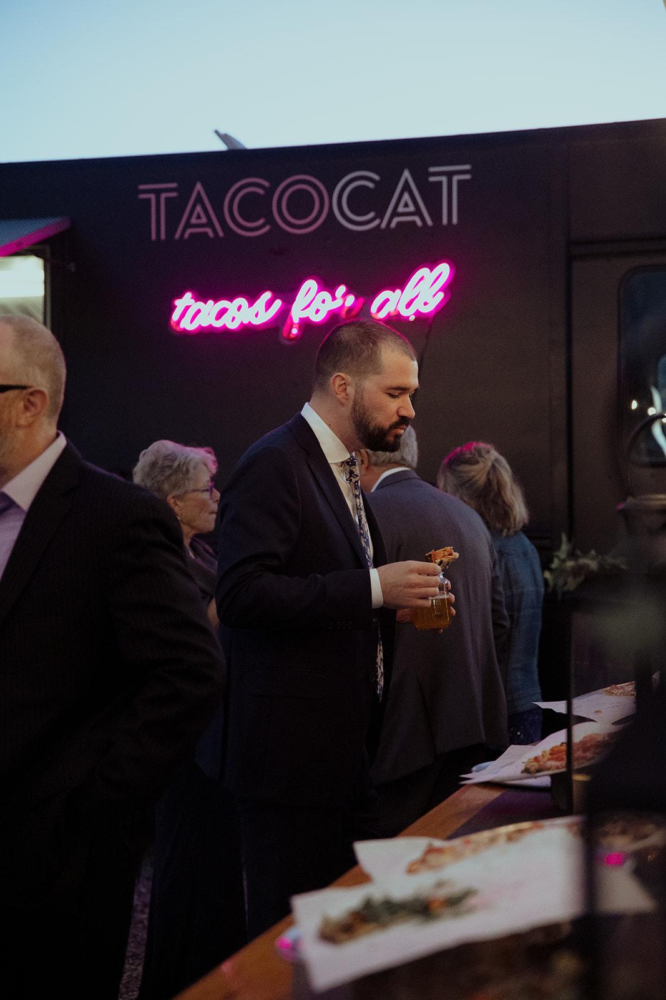
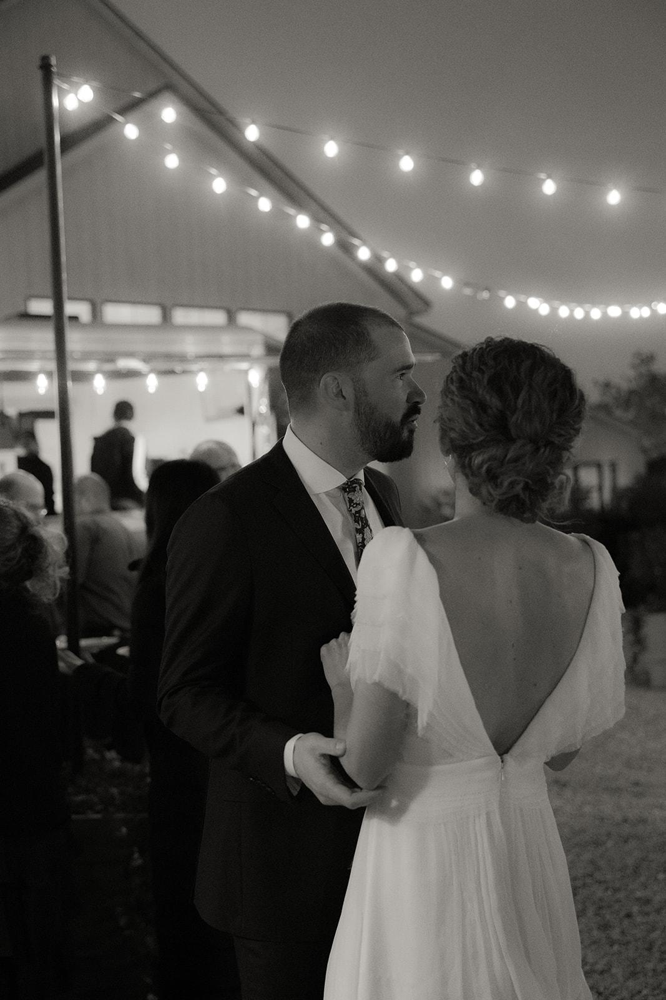
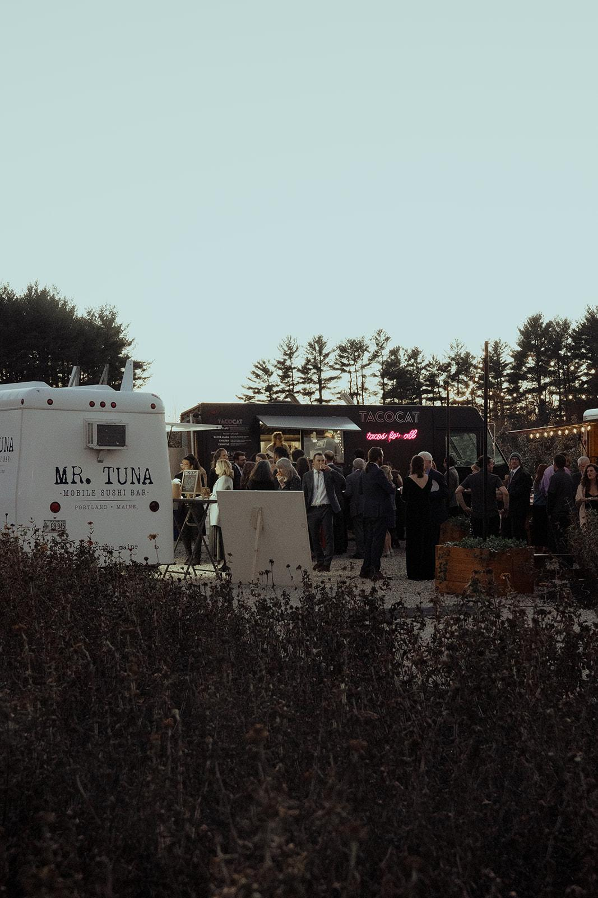

Dinner + Drinks
Food trucks.
Firelight.
As the sun drops, the food trucks line up and the whole evening shifts gear. You bring whatever fits your crew — we have the power hookups, the courtyard, and the space to make it a proper scene.



